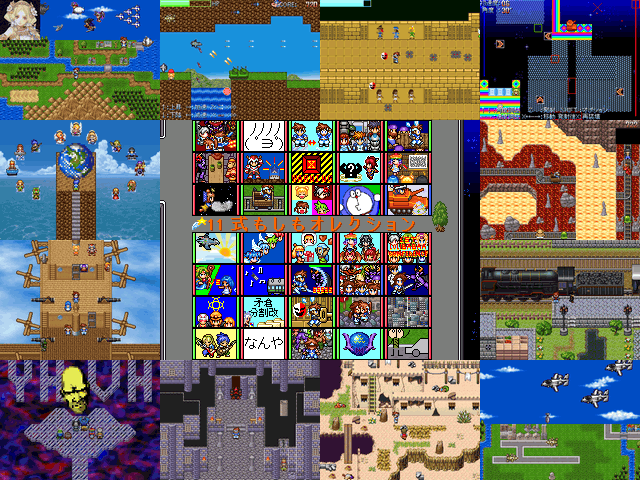

作品紹介
| ≪ Back | トップページ | 作品一覧 | Next ≫ |
| No017. - 11式もしもオレクション |

| 使用ツール：2000 |
| 作者：◆WLpLeO3gVY |
| ジャンル：コレクション |
| 動画・配信：可 |
|
「ねんがんの もしコレふうさくひんがtkれたぞ！」 特徴 ・過去に投下した作品のから35作を収録予定！(※収録作品は若干増える可能性があります) ・ksgからコレひどゲーまで幅広いジャンルを収録！ ・下ネタから醤油ネタまでカオス王道なんでもあり！ ・ステージやネタの追加から誤字の修正まで色んな変更あり！ ・もしコレ7と同様に枠の色を作品の長さで色分け！ ・物語選択時にジャンルや変更の有無、人を選ぶ要素が分る画期的システムを実装しましたよ市民！ ・素材集としても使えマッシュ！ |
| 管理人コメント：シュシュっと惨状！(ｻﾝｼﾞｮｰｳ!) |
| ダウンロード(20.0MB) / 感想掲示板 ツイート |
更新情報・お知らせ
- 2011/12/23
- 提出
- 2011/12/06
- 提出
- 2011/10/30
- エントリー